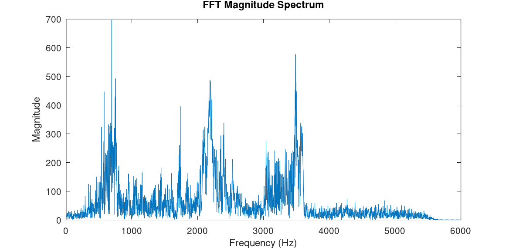
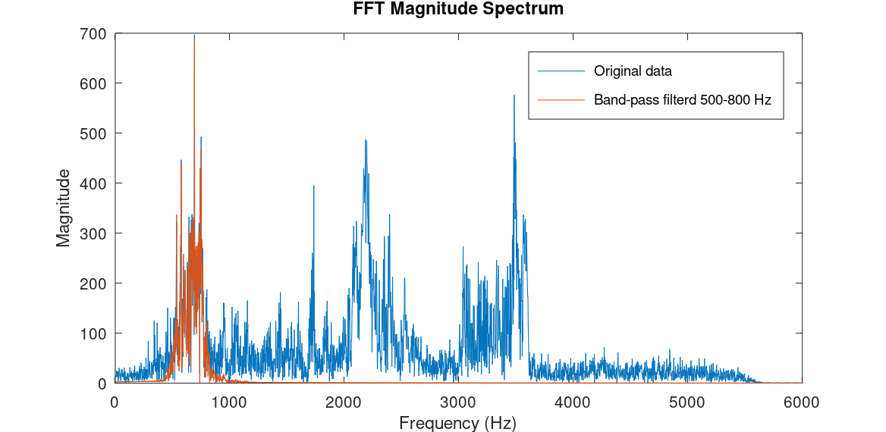
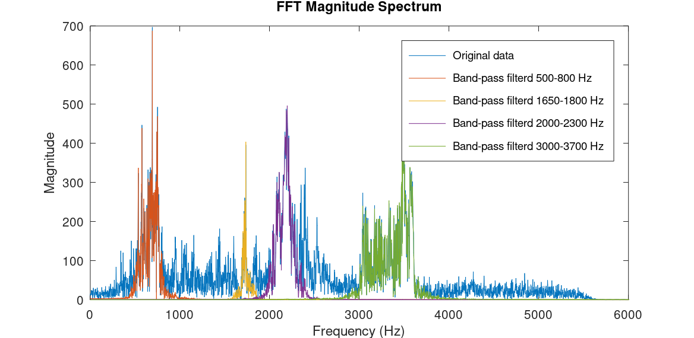
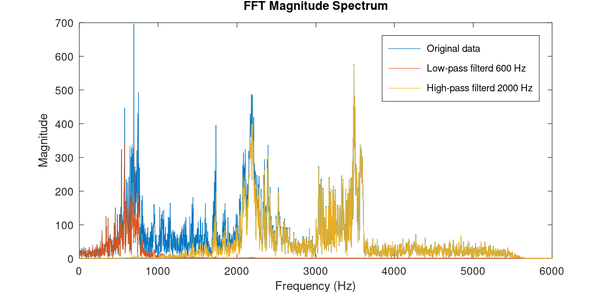

Signal Processing - Classic Filtering Demostration
I have a strong passion for signal processing. The potential for manipulating data and gaining insights through signal processing is vast. In an upcoming blog post, I aim to introduce the most basic and classic filters briefly
I'd like to introduce the concepts of FFT, low-pass, high-pass, and band-pass filters. Assuming readers lack familiarity with signal processing backgrounds, I'll strive to maintain simplicity.
Utilizing a sound sample seems the most intuitive method for demonstration, bearing in mind that the tools and conclusions remain applicable to any data.
Let's begin!
Take a moment to listen to this sample of a crowd cheering. Pay attention to the various sounds and tones, the distinction between high and low-level voices, and the differences in sound volume.
We begin by introducing the FFT (Fast Fourier Transform). Without delving into the mathematical definitions of FFT, its graph depicts the frequency domain of a time sample. In simpler terms, it illustrates the highs, lows, and everything in between, along with their respective volumes. If you noticed variations in the sound sample, the FFT graph will reflect them. The FFT code and all other source files can be found at the end of the post. Let's examine the following graph.
The horizontal axis represents frequency, while the vertical axis represents the magnitude or volume of each frequency. Numerous spikes of varying levels can be observed, each corresponding to different strengths in the time sample. Additionally, areas with groups of frequencies stand out above others. What do these groups signify? Let's delve into that shortly, but before proceeding, we must clarify the next term.
Low-pass – Allows low-frequency components of a signal to pass through unaffected or with minimal attenuation, while attenuating or blocking high-frequency components. High-pass – Passes signals with frequencies above a certain cutoff frequency while attenuating frequencies below that cutoff. Band-pass – Selectively passes signals within a certain frequency band while suppressing signals both below and above that band.Assuming our focus is on analyzing the initial spikes group ranging from 500Hz to 800Hz, we can design a bandpass filter tailored to permit these specific frequencies while attenuating anything outside of this range. In the graph below we can see the original audio data in blue and the filtered data in red.
Now, listen to the filtered audio:
It's noticeable that all the high-pitched whistles have been eliminated. Pretty neat, isn't it?
Let's repeat the process for the other spike groups. For each frequency group, we'll design the appropriate filter to achieve that objective.
Listen to the results:
Band-pass 1650-1800 [Hz]
Band-pass 2000-2300 [Hz]
Band-pass 3000-3700 [Hz]
It's evident that every sound from the original audio file is now isolated thanks to the bandpass filters.
Once we grasp the effectiveness of bandpass filtering, understanding low-pass and high-pass filters becomes straightforward. Let's design a low-pass filter with a cutoff at 600Hz and a high-pass filter with a cutoff at 2000Hz, so we can hear the last two whistles.
Low-pass with cutoff at 600 [Hz]
High-pass with cutoff at 2000 [Hz]
I belive this post provides a nice introduction to classic filter concepts. However, this is merely scratching the surface of signal processing. There are numerous topics to explore and countless exciting possibilities to delve into using it, along with a plethora of sophisticated tools and filters available to gain insights from data.
Thank you for reading! Please don't hesitate to reach out if you have any questions or need further information.
The link to the source code can be found on my GitHub page:
GitHub Repository